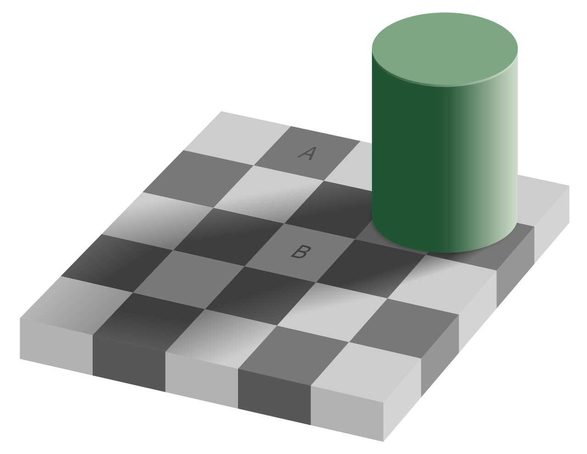
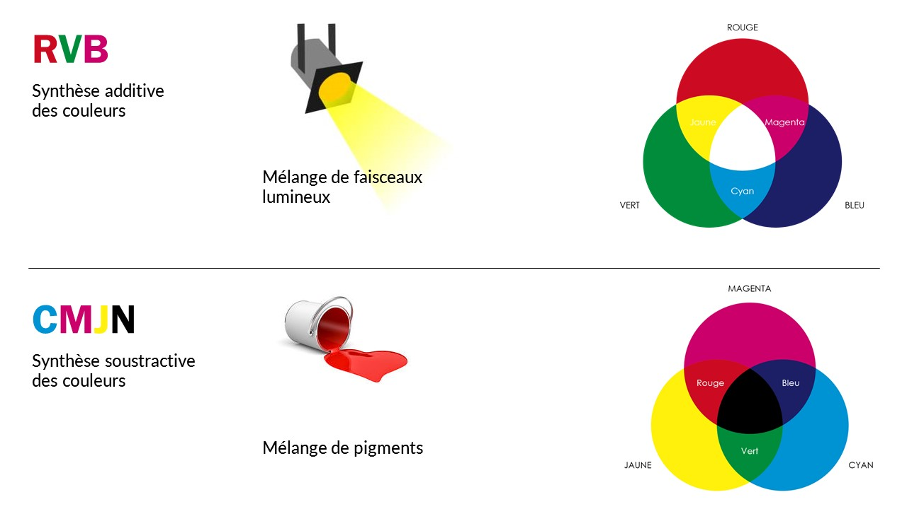
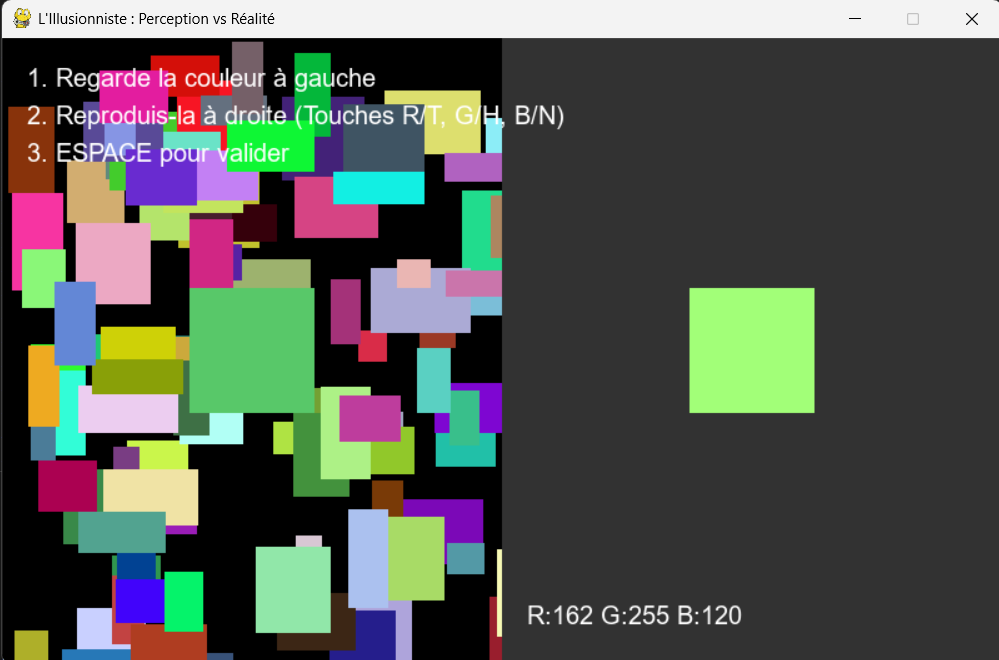
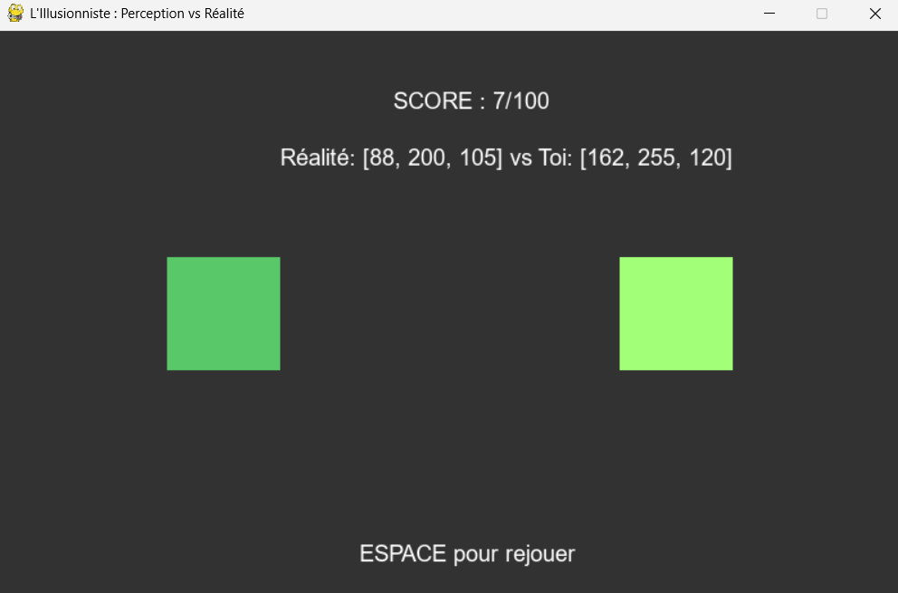
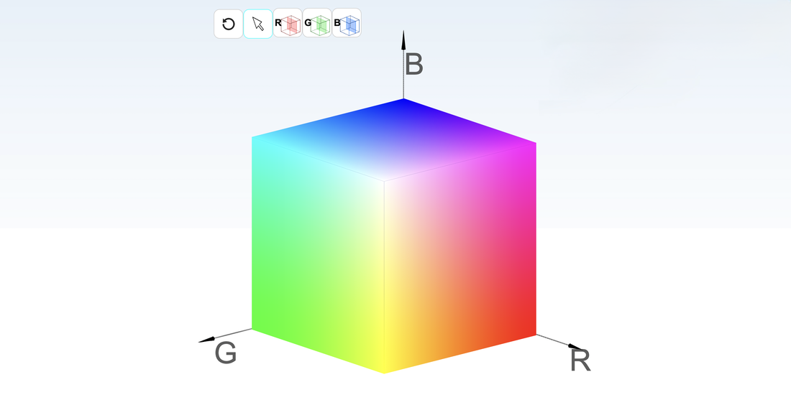

BUT 3 INFORMATIQUE
R.5.A06 Introduction à la programmation multimédia
RAPPORT DE PROJET
L'ILLUSIONNISTE
Echec et mat hehehe...
Étudiant : Hocine ZARED
Groupe : Maké-Maké
Année : 2025 - 2026
Étudiant : Hocine ZARED
Groupe : Maké-Maké
Année : 2025 - 2026
Lorsque le sujet du projet de R.5.A06 nous a été présenté, je ne voulais pas simplement "recoder" un jeu classique comme un Snake ou un Tetris. J'avais l'impression que cela ne mettrait pas assez en valeur les spécificités du cours sur le traitement de l'image.
En relisant le support de cours pour trouver l'inspiration, j'ai été stoppé net par une phrase du Chapitre 1 : "Le cerveau nous ment".
Cette phrase m'a marqué. Elle signifie que la donnée informatique (le pixel stocké en mémoire) est une vérité absolue, alors que ce que l'utilisateur voit est une interprétation subjective. J'ai donc décidé de créer "L'Illusionniste", un logiciel expérimental qui piège le cerveau de l'utilisateur pour lui faire toucher du doigt les limites de sa propre vision.
Mon application repose sur la mise en pratique de deux phénomènes physiques et physiologiques vus en cours.
L'œil humain juge les couleurs par comparaison. C'est le principe de l'illusion d'Adelson vue en cours : un gris moyen paraît blanc sur fond noir, et noir sur fond blanc. Dans mon programme, je sature la rétine de l'utilisateur avec des couleurs vives autour de la cible pour fausser son jugement.

Contrairement à la peinture, l'écran fonctionne en synthèse additive. Pour obtenir du Jaune, l'utilisateur doit comprendre qu'il faut additionner le Rouge et le Vert. Je voulais rendre ludique ce raisonnement peu naturel.

Conformément aux attendus du projet, voici le détail des choix d'implémentation.
random) et des primitives vectorielles (draw.rect). Cela garantit une application très légère.Pour éviter que les 100 rectangles ne fassent clignoter l'écran, je les dessine d'abord en mémoire cache avant de les envoyer à l'écran.
1. Types d'entrée : L'interaction se fait exclusivement au Clavier. J'ai volontairement exclu la souris pour une raison d'Expérience Utilisateur : cela force le joueur à réfléchir au canal (R, G ou B) qu'il modifie, plutôt que de cliquer au hasard sur une palette.
2. Limitation Mathématique : La validation de la victoire repose sur un seuil de distance mathématique fixe (distance < 15). C'est une limite car l'œil humain n'a pas la même sensibilité pour toutes les couleurs (nous sommes plus sensibles au vert qu'au bleu), ce que la formule simple ne prend pas en compte.
L'expérience repose sur deux phases distinctes. L'interface change radicalement pour créer un effet de surprise et de révélation.


Pour valider le résultat, j'ai dû résoudre le problème de la perception subjective. Comparer if couleur == cible est impossible car l'œil ne voit pas les différences minimes.
J'ai utilisé la Distance Euclidienne dans l'espace 3D (RGB) pour calculer un score de précision fiable :

Ce projet "L'Illusionniste" a été une excellente manière de valider mes compétences en BUT 3.
D'un point de vue technique, je maîtrise désormais la boucle d'événements Pygame et la manipulation des tuples RGB. Mais c'est surtout d'un point de vue conceptuel que j'ai progressé. J'ai compris que le Traitement d'Image, ce n'est pas seulement afficher des pixels : c'est comprendre comment ces pixels sont interprétés par l'humain.
Si je devais aller plus loin, la suite logique serait d'intégrer un simulateur de daltonisme pour sensibiliser à l'accessibilité.
Fin du rapport - Hocine ZARED